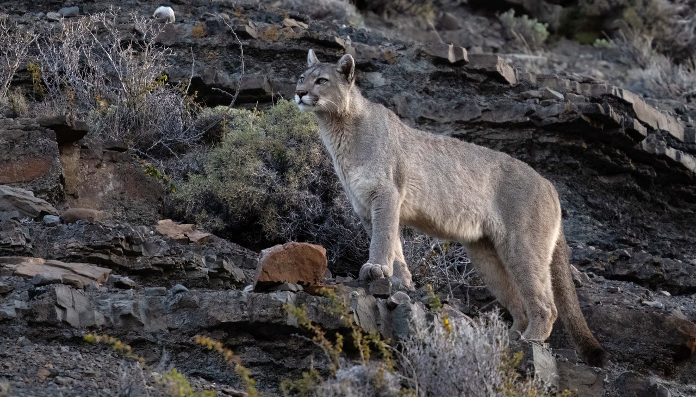
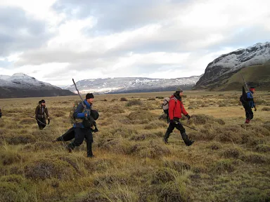
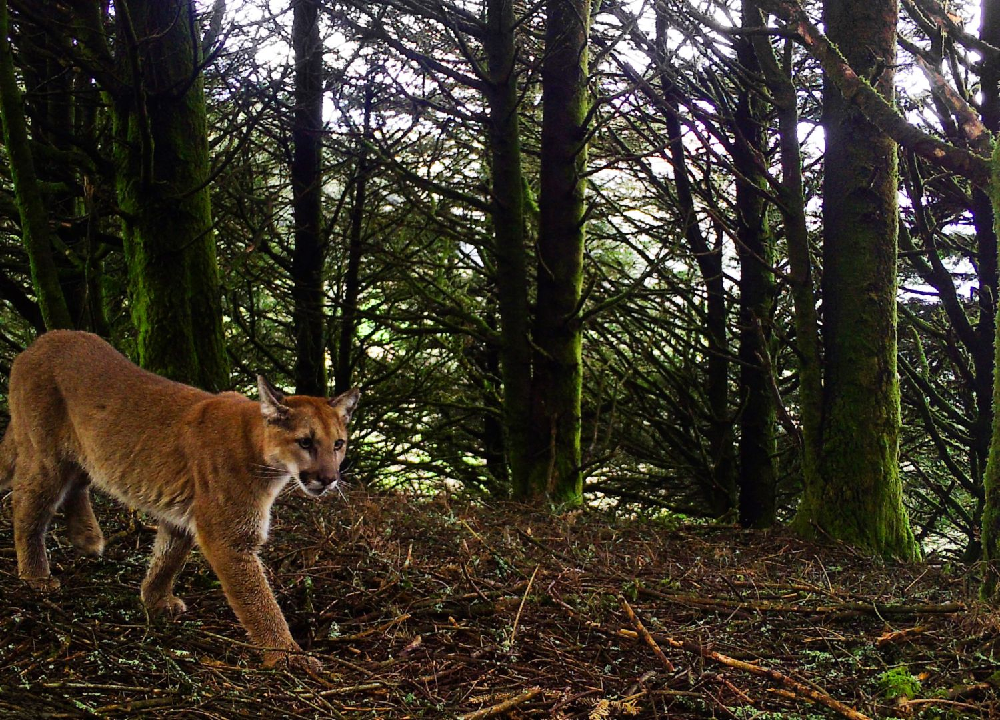
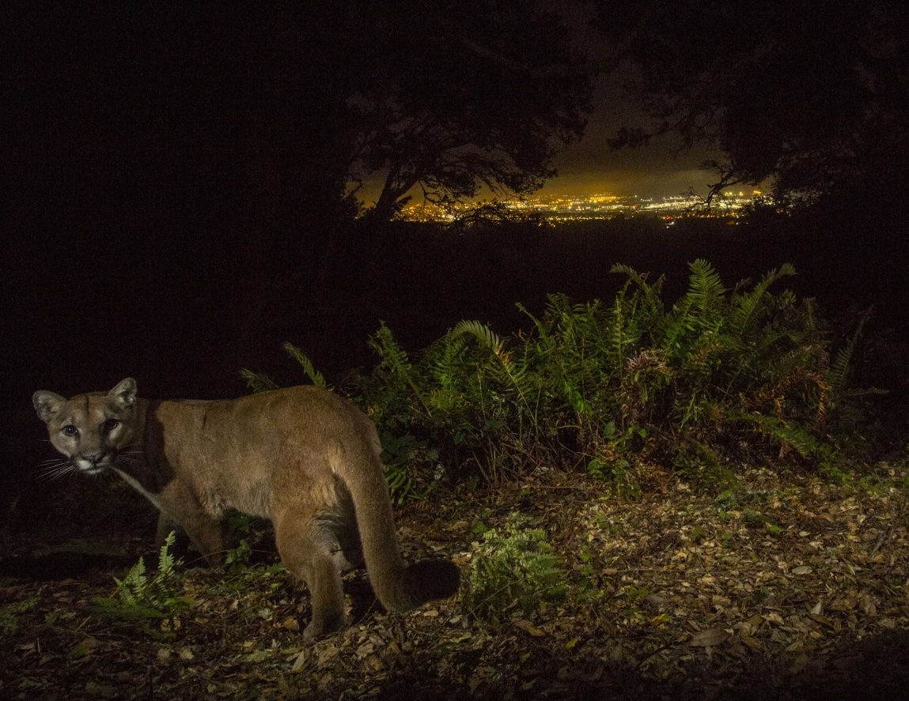
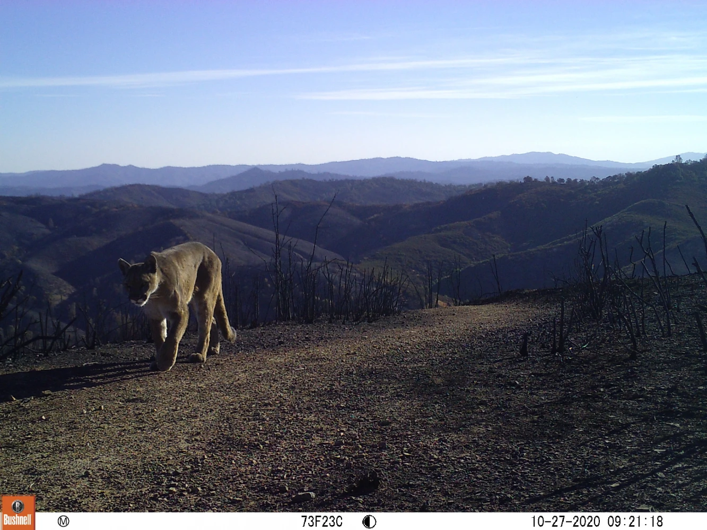
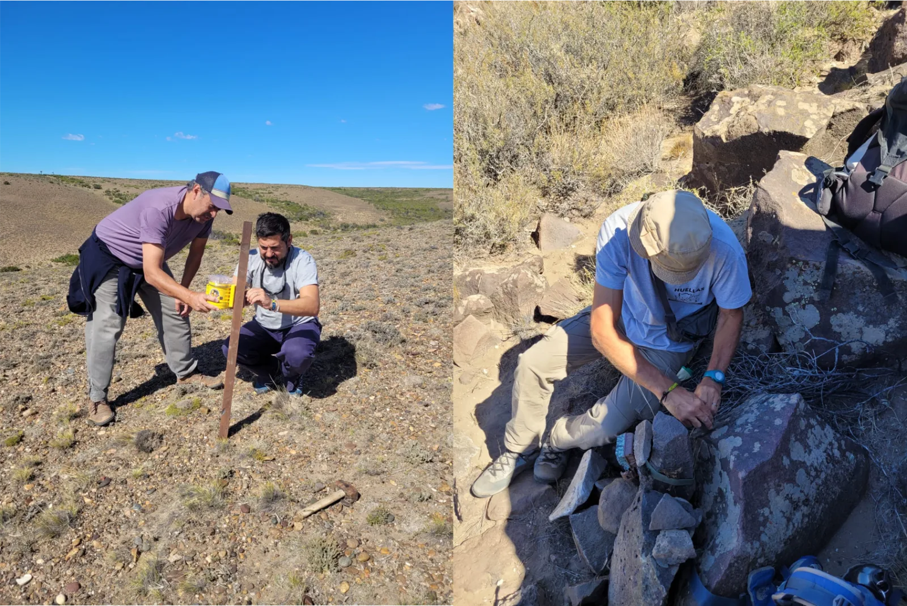
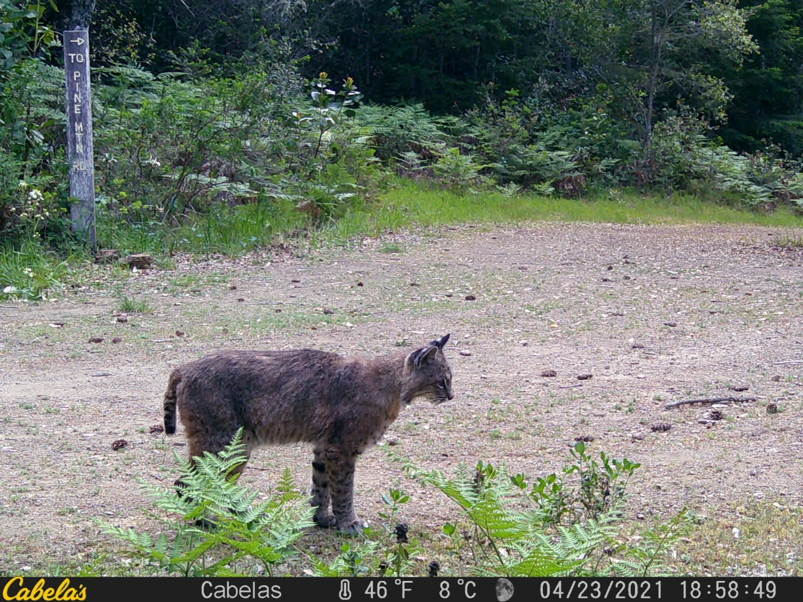

The Cat in the Bottleneck
A young male puma must cross freeways and developed areas to reach the Diablo Range — or his population edges toward local extinction.
Photo by Sharon Osberg
Impact by the Numbers
Decades of work. Measurable results.
0
Data Points
Collected via camera traps, fecal samples, hair samples, and community-submitted research
0
+ People Reached
Through in-person events, virtual workshops, and classroom programs since 2022
0
+ Volunteers
Contributing 9,957+ hours to field work, data entry, software engineering, AI training, citizen science, writing, and community programs
0
Active Studies
Spanning 4 continents and 7 distinct ecosystems worldwide
Our Mission
Protecting local wildlife and the spaces they call home
Innovative Wild Cat Research and Conservation

Field Research
Camera traps, fecal surveys, hair surveys, bioacoustics, and health biomarkers across two continents give us the data to act precisely where it matters most.
Explore our projects
Habitat Protection
Working with landowners, policymakers, government agencies, and indigenous communities to identify and maintain corridors where wild cats can move through safely.
Learn about ecosystems
Education & Coexistence
Equipping communities with tools to live alongside wild cats — reducing conflict, building the understanding that fuels long-term protection.
Coexistence resourcesWild Cats of the World
40 species. Each worth protecting.
Current Research
In the field, right now.

ActiveNorth America · California
Bay Area Puma Project
Tracking puma movement, survival, and habitat use across the greater Bay Area — building the science needed to protect corridors between the Santa Cruz Mountains and Diablo Range.

ActiveSouth America · Argentina & Chile
Patagonia Wild Cats Project
Studying puma movement and Andean cat behavior across Patagonia's steppe. GPS collar data is reshaping conservation boundaries for protected areas across the region.

ActiveCalifornia · Bay Area
Bay Area Bobcat Project
Tracking bobcat survival, reproduction, and movement through the fragmented wildland-urban interface — building the case for wildlife corridor protections across the East Bay hills.
News
Stories, updates & spotlights.

News
The Hidden Toll of Rodenticides Poisoning Pumas and Bobcats
If there is one fundamental truth about chemical poisons, it is that they never stay where we put them.

News
The Wild Cats of Japan: A Fight for Survival
Japan’s only two native wild cats, the Tsushima leopard cat and the Iriomote cat, are on the brink of extinction.

News
A Genetic Mishap: Decoding the Cheetah’s DNA
The cheetah (Acinonyx jubatus) is the undisputed speed champion of the land, but behind that incredible athleticism lies a complicated genetic history.
Get Involved
Your time creates lasting change.
Whether you're a scientist, a hiker, or a wildlife photographer — there's a role for you in wild cat conservation.
Get StartedSupport our Work
Make a difference today.
Every dollar funds real science — camera traps, GPS collars, field teams, and community programs that protect wild cats.